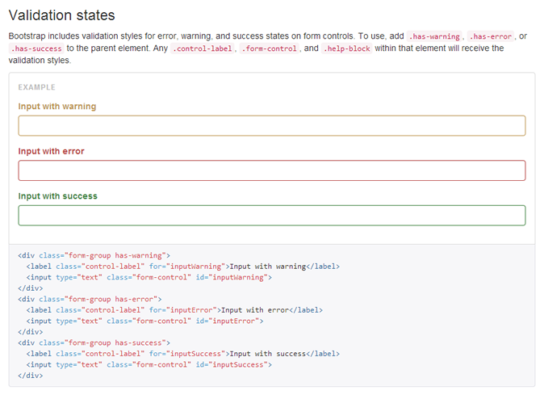
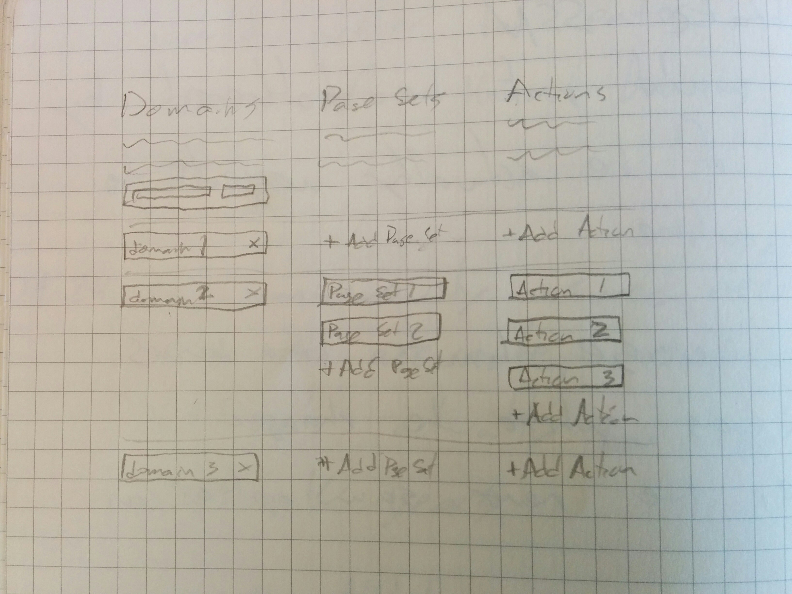
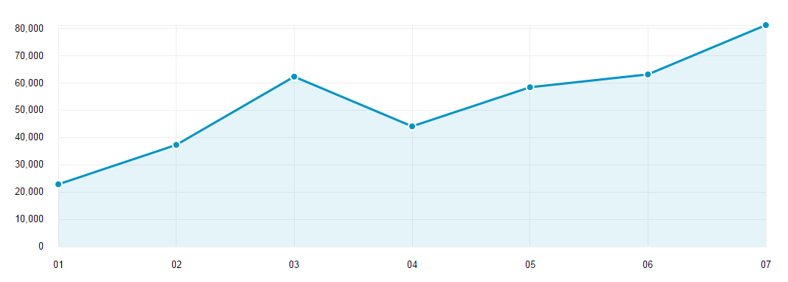

from Fireworks to Frameworks
Jason Wilkens
+
objections
- takes too long, designing in Photoshop is faster
- have to do graphics in one program and layout in another
- stifles creativity, pushes people toward minimal/flat design

1998

Bizo

framework benefits

waterfall process
kanban process
kanban bins
- Backlog
- Dev Ready [12]
- In Progress [10]
- Test [8]
- Production [15]
kanban task
Example

sketching

from sketch, start prototyping
quick and dirty
- inline styles
- no classes added to framework yet
publish for review
- send link to stakeholders
- can keep updating during review
code review
iterate
- concurrent feedback
- as design finalizes, add styles to framework

create asana task

link to any supplemental docs
design quality
- fewer surprises at release
- typographic rendering

design quality

prototyping

charts

chart markup

chart styles
keep design grounded in reality

scalable

scalable
consistency
- documentation in practice
- easy to follow standards
engineering
- let developers develop
- better collaboration
- less documentation
comfort
- typing faster than dragging
easy to share
- update on the fly
- maintain control
- get rid of outdated designs

how to start
- partner with engineers
- choose a framework
- fork your own version to customize
- set up repository to track and review code
- publish release candidate/prototype site
- set up local server
- add new features over time
resources
- stack overflow
- W3C schools
- css-tricks.com
- ask a teammate